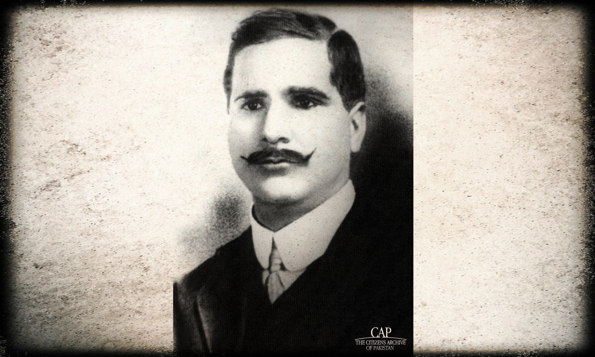
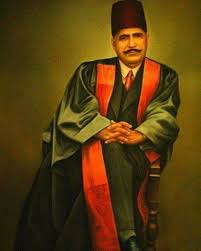
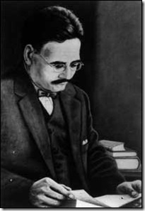
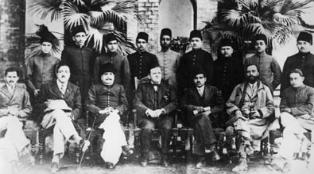
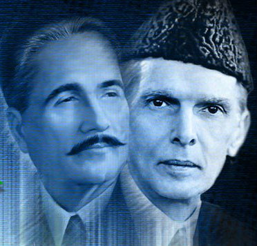
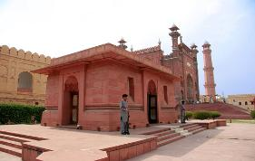

 Iqbal was born in Sialkot, within the Punjab Province of British India (now in Pakistan). Iqbal ancestors were kashmiri Pandits, the Brahmins from Kashmir who converted to Islam. In the 19th century, when Sikh were taking over rule of Kashmir, his grandfather's family migrated to Punjab. Iqbal often mentioned and reminisced about his Kashmiri Pandit Brahmin lineage in his writings. Iqbal's father, Shaikh Noor Mohammad, was a tailor, not formally educated but a religious man. Iqbal's mother Imam Bibi was a polite and humble woman who helped the poor and solved the problems of neighbours. She died on November 9, 1914 in Sialkot. Iqbal loved his mother, and on her death he expressed his feelings of pathos in a poetic form elegy. "Who would wait for me anxiously in my native place? Who would display restlessness if my letter fails to arrive? I will visit thy grave with this complaint: Who will now think of me in midnight prayers? All thy life thy love served me with devotion— When I became fit to serve thee, thou hast departed." When Iqbal was four years old, he was sent to the mosque to learn the Quran. Later, Syed Mir Hassan, the head of the Madrassa in Sialkot, became his teacher. Iqbal received the Faculty of Arts diploma from Scotch Mission College in 1895, where his teacher Hassan was the professor of Arabic. In the same year Iqbal married Karim Bibi, the daughter of a Gujrati physician Khan Bahadur Ata Muhammad Khan, through a first arranged marriage. They had daughter Miraj Begum and son Aftab Iqbal. Later Iqbal's second marriage was with Sardar Begum mother of Javid Iqbal and third marriage with Mukhtar Begum in December 1914.
 Upon his return to India in 1908, Iqbal took up assistant professorship at the Government College in Lahore, but for financial reasons he relinquished it within a year to practice law. During this period, Iqbal's personal life was in turmoil. He divorced Karim Bibi in 1916, but provided financial support to her and their children for the rest of his life. While maintaining his legal practice, Iqbal began concentrating on spiritual and religious subjects, and publishing poetry and literary works. He became active in the Anjuman-e-Himayat-e-Islam, a congress of Muslim intellectuals, writers and poets as well as politicians and in 1919 became the general secretary of the organization. Iqbal's thoughts in his work primarily focused on the spiritual direction and development of human society, centered on experiences from his travel and stay in Western Europe and the Middle East. He was profoundly influenced by Western philosophers such as Friedrich Nietzsche, Henri Bergson and Goethe, and soon became a strong critic of Western society's separation of religion from state and what he perceived as its obsession with materialist pursuits. The poetry and philosophy of Mawlana Rumi bore the deepest influence on Iqbal's mind. Deeply grounded in religion since childhood, Iqbal would begin intensely concentrating on the study of Islam, the culture and history of Islamic civilization and its political future, and embrace Rumi as "his guide." Iqbal would feature Rumi in the role of a guide in many of his poems, and his works focused on reminding his readers of the past glories of Islamic civilization, and delivering a message of a pure, spiritual focus on Islam as a source for socio-political liberation and greatness. Iqbal denounced political divisions within and amongst Muslim nations, and frequently alluded to and spoke in terms of the global Muslim community, or the Ummah.
 Iqbal's poetic works are written mostly in Persian rather. Among his 12,000 verses of poem, about 7,000 verses are in Persian. In 1915, he published his first collection of poetry, the Asrar-e-Khudi (Secrets of the Self) in Persian. The poems delve into concepts of ego and emphasize the spirit and self from a religious, spiritual perspective. Many critics have called this Iqbal's finest poetic work. In Asrar-e-Khudi, Iqbal has explained his philosophy of "Khudi," or "Self." He proves by various means that the whole universe obeys the will of the "Self." Iqbal condemns self-destruction. For him the aim of life is self-realization and self-knowledge. He charts the stages through which the "Self" has to pass before finally arriving at its point of perfection, enabling the knower of the "Self" to become the viceregent of Allah. In his Rumuz-e-Bekhudi (Hints of Selflessness), Iqbal seeks to prove that Islamic way of life is the best code of conduct for a nation's viability. A person must keep his individual characteristics intact but once this is achieved he should sacrifice his personal ambitions for the needs of the nation (Muslim Ummah). Also in Persian and published in 1917, this group of poems has as its main themes the ideal community, Islamic ethical and social principles and the relationship between the individual and society. Although he is true throughout to Islam, Iqbal recognises also the positive analogous aspects of other religions. The Rumuz-e-Bekhudi complements the emphasis on the self in the Asrar-e-Khudi and the two collections are often put in the same volume under the title Asrar-e-Rumuz (Hinting Secrets), and it is addressed to the world's Muslims. Iqbal sees the individual and his community as reflections of each other. The individual needs to be strengthened before he can be integrated into the community, whose development in turn depends on the preservation of the communal ego. It is through contact with others that an ego learns to accept the limitations of its own freedom and the meaning of love. Muslim communities must ensure order in life and must therefore preserve their communal tradition. It is in this context that Iqbal sees the vital role of women, who as mothers are directly responsible for inculcating values in their children. Iqbal's 1924 publication, the Payam-e-Mashriq (The Message of the East) is closely connected to the West-östlicher Diwan by the famous German poet Goethe. Goethe bemoaned that the West had become too materialistic in outlook and expected that the East would provide a message of hope that would resuscitate spiritual values. Iqbal styles his work as a reminder to the West of the importance of morality, religion and civilization by underlining the need for cultivating feeling, ardour and dynamism. He explains that an individual could never aspire for higher dimensions unless he learns of the nature of spirituality.[6] In his first visit to Afghanistan, he presented his book "Payam-e Mashreq" to King Amanullah Khan in which he admired the liberal movements of Afghanistan against the British Empire. In 1933, he was officially invited to Afghanistan to join the meetings regarding the establishment of Kabul University.
 While dividing his time between law and poetry, Iqbal had remained active in the Muslim League. He supported Indian involvement in World War I, as well as the Khilafat movement and remained in close touch with Muslim political leaders such as Maulana Mohammad Aliand Muhammad Ali Jinnah. He was a critic of the mainstream Indian National Congress, which he regarded as dominated by Hindus and was disappointed with the League when during the 1920s, it was absorbed in factional divides between the pro-British group led by Sir Muhammad Shafi and the centrist group led by Jinnah. In November 1926, with the encouragement of friends and supporters, Iqbal contested for a seat in the Punjab Legislative Assembly from the Muslim district of Lahore, and defeated his opponent by a margin of 3,177 votes. He supported the constitutional proposals presented by Jinnah with the aim of guaranteeing Muslim political rights and influence in a coalition with the Congress, and worked with the Aga Khan and other Muslim leaders to mend the factional divisions and achieve unity in the Muslim League.
 Ideologically separated from Congress Muslim leaders, Iqbal had also been disillusioned with the politicians of the Muslim League owing to the factional conflict that plagued the League in the 1920s. Discontent with factional leaders like Sir Muhammad Shafi and Sir Fazl-ur-Rahman, Iqbal came to believe that only Muhammad Ali Jinnah was a political leader capable of preserving this unity and fulfilling the League's objectives on Muslim political empowerment. Building a strong, personal correspondence with Jinnah, Iqbal was an influential force on convincing Jinnah to end his self-imposed exile in London, return to India and take charge of the League. Iqbal firmly believed that Jinnah was the only leader capable of drawing Indian Muslims to the League and maintaining party unity before the British and the Congress: "I know you are a busy man but I do hope you won't mind my writing to you often, as you are the only Muslim in India today to whom the community has right to look up for safe guidance through the storm which is coming to North-West India and, perhaps, to the whole of India."There were significant differences between the two men — while Iqbal believed that Islam was the source of government and society, Jinnah was a believer in secular government and had laid out a secular vision for Pakistan where religion would have "nothing to do with the business of the state." Iqbal had backed the Khilafat struggle; Jinnah had dismissed it as "religious frenzy." And while Iqbal espoused the idea of partitioning Muslim-majority provinces in 1930, Jinnah would continue to hold talks with the Congress through the decade and only officially embraced the goal of Pakistan in 1940. Some historians postulate that Jinnah always remained hopeful for an agreement with the Congress and never fully desired the partition of India. Iqbal's close correspondence with Jinnah is speculated by some historians as having been responsible for Jinnah's embrace of the idea of Pakistan. Iqbal elucidated to Jinnah his vision of a separate Muslim state in a letter sent on June 21, 1937:"A separate federation of Muslim Provinces, reformed on the lines I have suggested above, is the only course by which we can secure a peaceful India and save Muslims from the domination of Non-Muslims. Why should not the Muslims of North-West India and Bengal be considered as nations entitled to self-determination just as other nations in India and outside India are."Iqbal, serving as president of the Punjab Muslim League, criticized Jinnah's political actions, including a political agreement with Punjabi leader Sir Sikandar Hyat Khan, whom Iqbal saw as a representative of feudal classes and not committed to Islam as the core political philosophy. Nevertheless, Iqbal worked constantly to encourage Muslim leaders and masses to support Jinnah and the League. Speaking about the political future of Muslims in India, Iqbal said:"There is only one way out. Muslims should strengthen Jinnah's hands. They should join the Muslim League. Indian question, as is now being solved, can be countered by our united front against both the Hindus and the English. Without it, our demands are not going to be accepted. People say our demands smack of communalism. This is sheer propaganda. These demands relate to the defense of our national existence.... The united front can be formed under the leadership of the Muslim League. And the Muslim League can succeed only on account of Jinnah. Now none but Jinnah is capable of leading the Muslims."
 In 1933, after returning from a trip to Spain and Afghanistan, Iqbal's health deteriorated. He spent his final years working to establish the Idara Dar-ul-Islam, an institution where studies in classical Islam and contemporary social science would be subsidized, and advocating the demand for an independent Muslim state. Iqbal ceased practicing law in 1934 and he was granted pension by the Nawab of Bhopal. After suffering for months from a series of protracted illnesses, Iqbal died in Lahore in 1938. His tomb is located in the space between the entrance of the Badshahi Mosque and the Lahore Fort.Iqbal is commemorated widely in Pakistan, where he is regarded as the ideological founder of the state. His Tarana-e-Hind is a song that is widely used in India as a patriotic song speaking of communal harmony. His birthday is annually commemorated in Pakistan as Iqbal Day and is a national holiday. For a long time, Iqbal's actual date of birth remained disputed, with many believing February 23 to be the date of Iqbal's birth. On February 1, 1974 a Pakistani government committee officially declared Iqbal's date of birth to be November 9. Iqbal is the namesake of many public institutions, including the Allama Iqbal Medical College,Lahore, Allama Iqbal Open University and the Allama Iqbal International Airport in Lahore — the second-busiest airport in the nation. Government and public organizations have sponsored the establishment of colleges and schools dedicated to Iqbal, and have established the Iqbal Academy to research, teach and preserve the works, literature and philosophy of Iqbal.